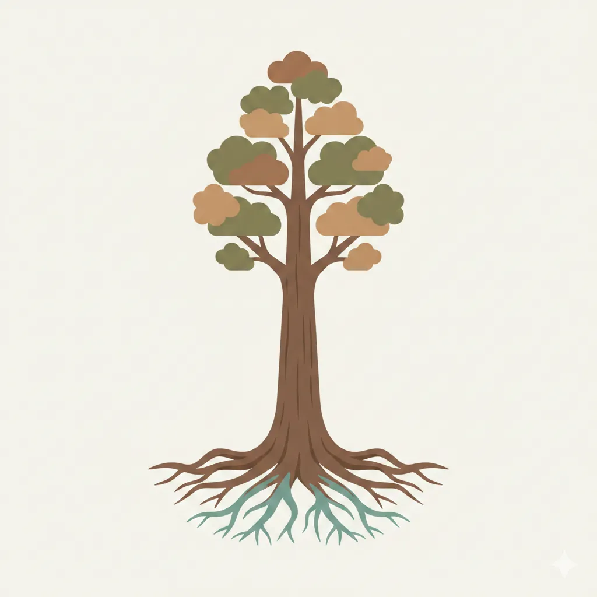

In the Four Pillars of Destiny system, often known as Saju or Bazi, the Day Master represents the symbolic center of a natal chart. It serves as the interpretive reference point for understanding elemental relationships, personality tendencies, and energetic balance. Rather than functioning as a fixed identity label, it reflects a metaphorical framework that describes how an individual engages with their environment.
The 甲(Gap) Wood Day Master corresponds to Yang Wood energy and is the first of the ten Heavenly Stems. Traditional symbolism associates it with the image of a tall tree growing upward from deep roots. Because of this imagery, discussions about the 甲(Gap) Wood Day Master often involve themes of growth, direction, leadership tendencies, and structural integrity. Exploring these associations helps build foundational understanding for students studying Saju interpretation.
Within classical elemental theory, Wood represents expansion and vitality. The Yang expression embodied by 甲(Gap) emphasizes firmness and outward movement rather than flexibility. This symbolism frames interpretive discussions around direction, ambition, and persistence.
The Five Element cycle provides further context. Wood generates Fire, meaning expressive or creative outlets emerge from its activity. Water nourishes Wood, symbolizing supportive resources that encourage development. Wood influences Earth and is shaped by Metal, representing dynamic interactions rather than static categories. Understanding these relationships is essential when evaluating how a 甲(Gap) Wood Day Master functions within a complete chart.
Because chart interpretation depends on interaction rather than isolation, the surrounding elemental environment strongly affects whether symbolic Wood qualities appear amplified, moderated, or redirected.
Interpretive traditions frequently describe individuals with this Day Master as demonstrating initiative. The directional metaphor of upward growth reflects a tendency toward setting objectives and moving toward them intentionally. This does not imply identical behavior among all individuals, but it captures a recurring symbolic theme.
A developmental orientation is another commonly discussed characteristic. Growth and progress often appear as motivating concepts, and engagement with learning or long-term projects may feel naturally aligned with this energy. Situations perceived as stagnant may be experienced as unsatisfying because the archetype emphasizes evolution and expansion.
Structural imagery also contributes to interpretations concerning integrity or internal consistency. The upright tree metaphor suggests alignment with personal principles or established frameworks. These tendencies are not deterministic outcomes but reflect symbolic associations embedded in classical interpretive language.
Persistence represents one of the most frequently referenced strengths. Just as trees endure seasonal cycles, the symbolic energy associated with 甲(Gap) Wood often highlights sustained commitment over extended periods. This endurance can translate into resilience when navigating gradual or demanding processes.
Another potential strength involves long-range awareness. The expansive metaphor may align with strategic thinking or interest in developmental planning. Individuals may gravitate toward envisioning outcomes beyond immediate circumstances, contributing to structured decision-making approaches.
Within social environments, the structural symbolism can correspond with reliability or stabilizing influence. Interpretations sometimes describe individuals as providing continuity or guidance in collaborative contexts. This perspective arises from metaphorical association rather than universal prediction.
Strength and rigidity often exist as complementary possibilities within symbolic systems. The firmness associated with 甲(Gap) Wood may, in some contexts, translate into resistance to alternative viewpoints or difficulty adjusting course. Flexibility introduced through other chart influences can mitigate such tendencies.
Another interpretive challenge involves expansion without pacing. Continuous growth imagery may correlate with overextension, whether through excessive commitments or unrealistic expectations of productivity. Sustainable balance often requires awareness of cyclical rest and recalibration.
Sensitivity to constraining symbolic conditions may also arise. Because Metal shapes Wood within the Five Element relationship model, environments characterized by pressure or restriction may feel challenging. Classical interpretation views this interaction as formative rather than negative, emphasizing refinement through contrast.
Supportive symbolic nourishment traditionally comes from Water. Intellectual engagement, emotional support, and resource availability may be interpreted as conditions that enhance balanced expression of Wood qualities. These influences encourage steady and grounded development.
Expression through Fire generation represents another balancing factor. Communication, creativity, and leadership activity serve as channels through which symbolic Wood energy circulates outward. Such expression prevents stagnation within interpretive frameworks.
Balanced interpretation emphasizes dynamic interaction rather than elimination of difficulty. Harmonizing nourishment, structure, and expression produces equilibrium across symbolic elemental relationships.
Within relational contexts, interpretations sometimes associate this energy with direct communication styles or orientation toward purposeful interaction. The symbolic emphasis on direction may translate into valuing consistency or shared development. However, relational dynamics cannot be accurately inferred without examining complete chart interaction.
Career symbolism similarly reflects metaphor rather than prediction. Associations occasionally link 甲(Gap) Wood characteristics with environments involving planning, leadership, education, or structural development. These interpretations arise from archetypal imagery and should be considered exploratory rather than deterministic.
It is essential to recognize that identifying a 甲(Gap) Wood Day Master alone cannot produce meaningful conclusions. Seasonal strength, elemental distribution, branch interaction, and temporal cycles collectively influence interpretation outcomes. Treating the Day Master as an isolated descriptor risks oversimplification.
Furthermore, Saju and related systems function as symbolic traditions rooted in historical cosmology. Their insights operate within interpretive and reflective domains rather than empirical scientific validation. Maintaining this perspective supports responsible and balanced engagement with the framework.
The 甲(Gap) Wood Day Master symbolizes upward growth, structural presence, and directional momentum within the interpretive language of Saju analysis. Associated themes include persistence, initiative, and long-term orientation, alongside potential challenges involving rigidity or overextension. These symbolic associations provide valuable conceptual entry points for students exploring elemental interpretation.
Ultimately, meaningful understanding arises from examining the entire chart environment rather than focusing on a single component. By approaching the 甲(Gap) Wood archetype as a lens rather than a definition, learners can engage more thoughtfully with the depth and nuance of classical metaphoric systems.
Deepen your understanding of Saju with these foundational guides:
How to Read Saju · Ten Stars (Sipseong) · Fateful Stars (Sinsal) · 12 Stages of Energy
Explore real example charts to see how Saju analysis works in practice: